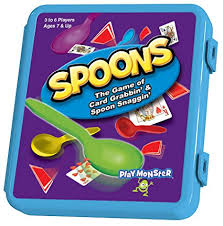
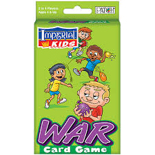
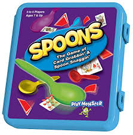
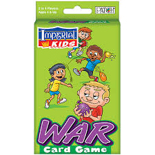

Here are listed some DIYs of card games that the kids could make right at home. That way parents and teachers can monitor the students to see what they are struggling with and help them in anyway they can.
- Go Fish-can be played with two-five players, to win you must run out of cards first, and you can write little math equations to test the students knowledge and basically make it fun for them
- Spoons-it can be played with three-six players, to win you must get the spoon the fastest, this game requires speed and memorization so you can label the cards with multiplications so it can help the students remember
- War-this game can be played with two or more players, the objective of the game is to have the higher number when placing down a card, you can have the students make up their own equations so when they solve it they can find out who wins
- 24 Game- the game can be played with two or more players, the objective is to have four integers that equal 24, this will help the students get better at problem solving and it helps turning it into a game
  
 